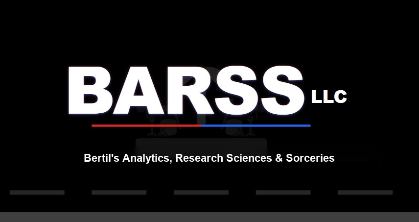

Ownership is a team sport. These are the people and institutions who backed KONKRET before it was easy... a research partner, women religious, a compost partner, diaspora parishes, and the Haitian diaspora itself.

Data · Strategy · ResearchThe economist who found the work, joined it, and set out to prove it. Job Power puts young Haitians in the fields. KONKRET runs it. BARSS is the desk that checks the money... the technical secretariat that holds the method, traces it dollar by dollar, and reports whether it became jobs and ownership for a young Haitian or leaked on the way down. The quiet firm that does this for others and rarely takes the credit. Here, it takes it.
Wesley Bertil is Haitian. Both his parents were born there. His family holds land in Haiti, where his mother still spends most of the year. He founded BARSS, a forensic research practice that follows the money across dozens of cases of elite extraction and proves whether it became power or leaked away. He brought that rigor to KONKRET, the data spine behind Job Power... the proof that a dollar in becomes a job, a harvest, and a share of ownership for a young Haitian. He built this site too.
The congregation whose trust and support helped pilot and test this work through the Jobs for Peace program. They showed up first, and they keep showing up.
A partner in turning waste into wealth... compost and regenerative soil that feed the TapTap gardens and close the loop from ground to harvest.
A parish community in Teaneck, New Jersey whose support helped this program stand up... the diaspora, backing the next generation at home.
Founding partner schools and diaspora families whose early gifts started the first cohorts. Our main partners, and the reason a dollar can become ownership instead of dependency.
More partners and logos are being confirmed and added here. If you have stood with this work, we want your name on this page.
Churches, schools, foundations, and diaspora networks... there is a place for you here. One more partner is one more farm, one more job, one more way out for Haiti's youth.
Become a Partner →